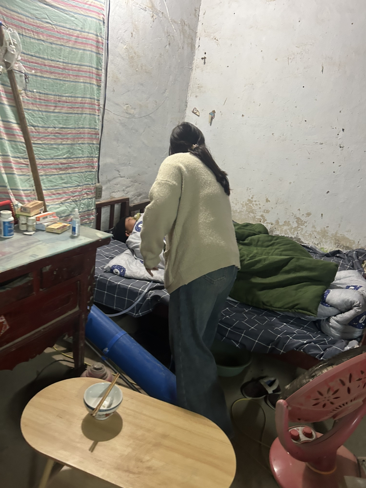
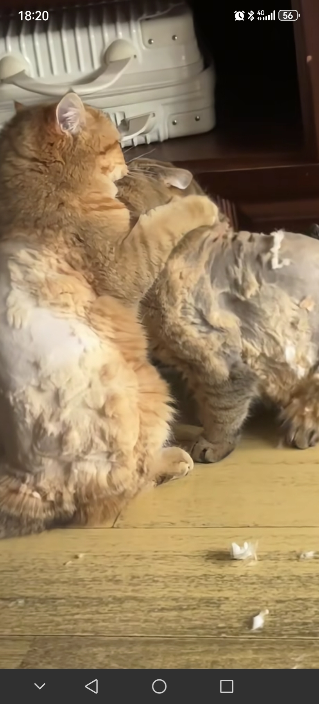
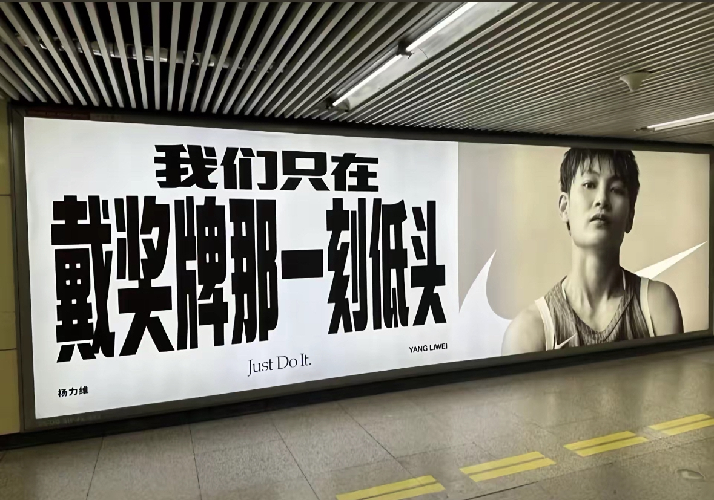
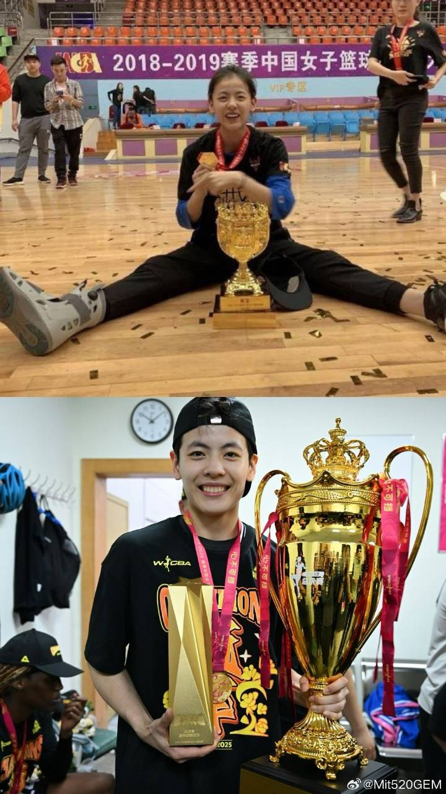
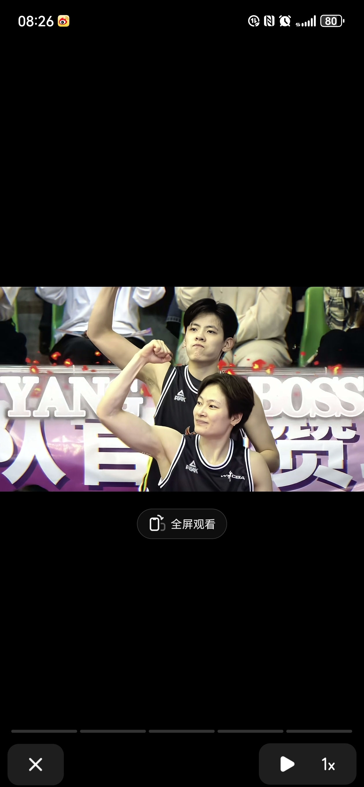
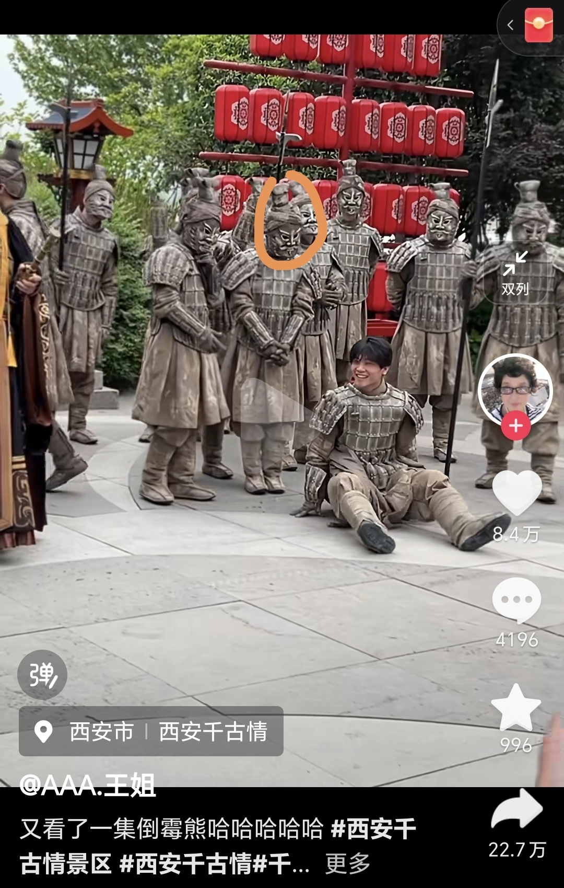
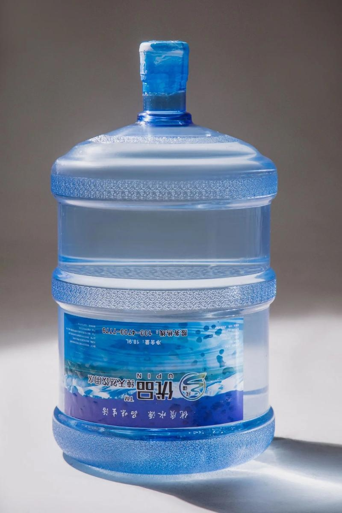

本杰明巴顿奇事 居然是真实
好高的鼻梁，病好了之后一定是个大帅哥或者大美女！（不知道宝宝性别）
为什么不做产检
如果可以代替，医院的天台上会站满妈妈
可以祝我爸爸早日康复嘛[流泪][流泪] 
很多人说不做产检造成的，你知道有多少病孕检根本没有那一项，成千上百种病，千奇百怪的病，产检才检查几个
我以为它俩相互啃成这样的[看] 
在家吹不会扰民吗，有什么方法可以让声音小点啊？[逞强落泪][逞强落泪]
吹笛子是不是肺活量得很好，万一我吹着吹着撅过去了怎么办[愉快]
一个自学笛子很久的人告诉你，吹笛子一定要靠时间的沉淀，慢慢的积累经验，别人早上7点练习，你6点练习，别人晚上练习到9点，你练习到10点，早晚练习，勤能补拙，耐得住寂寞，学笛子不能急，刚开始吹不好很正常，时间久了，自然就挂到咸鱼上去了。
主播学会吹笛子脸也能跟你一样又小又尖吗[流泪][比心]
……早知道不把我的笛子扔了[憨笑]好想捡回来
一直想买这款笛子，怎奈工作性质需要到处跑没时间吹[快哭了]
感觉我要是吹了楼下会来砸门[泪奔]
这和肺活量有关吗，好想学，但我肺活量差的说句就得喘
已经两个月没吹过笛子了 吹十天能遮半年[流泪]
我根本不知道去哪吹才能不打扰别人[流泪]我是应届生暂时还没毕业，住的是学校宿舍，去公园也怕很多人，导致我很久没练了[流泪][流泪][流泪]
我一直有个疑问，为什么动物捕猎后就喜欢先吃内脏，是因为好吃还是怕会先腐烂还是热量高还是别的
第一回听说有亚洲狮
这是当年和德罗赞单挑能打的有来有回的男人！
不是哥们，牛尾巴+彩虹过人+倒挂金钩，这是在国内吗[发呆][绿帽子]
很久以后 “你的足球跟谁学的，这么厉害” “我们小区一个会倒挂金钩的很厉害的哥哥”
就你这盘带我奶奶来了都
牛尾巴的含金量 :50 彩虹过人的含金量 :100 倒挂金沟的含金量 :10000
去领一个海参
我承认我一开始轻敌了[呲牙][呲牙]
牛尾巴、彩虹过人、倒挂金钩，每个动作都不是非常的完整和标准，但三个动作都能一次成功做出来也绝不是一件易事
错啦，我们真正踢球的都是和老登比速度，和小凳上身体[看]
有踢球的人才懂这技术的含金量。
内马尔什么时候有中国行了？[舔屏]
权威[黑脸]
性取向受到了前所未有的挑战[送心]
"我们只在戴奖牌的那一刻低头″
做到啦[流泪] 
MVP 
这也太近了吧[舔屏]
这张真的帅 
是赢了比赛大家都跑下去了嘛[流泪]
好想成为这样自信发光的女孩！
我要一个完整的队伍
蛋总你的牙……
男神你发福了[流泪]
张远常年把悲伤送给歌迷，把快乐留给自己。歌迷听到深夜emo，他自己在综艺上笑的嘎嘎嘎嘎嘎嘎嘎嘎
热恋：《一页诗》 分手：《看着我的眼睛说》 无法释怀：《嘉宾》《替我幸福》 释怀：《可以不是你》 远远你在前男友赛道真的无人可比[黑脸]
前男友赛道的神[泪奔]
兵马俑头套：丢脸？用你自己的脸[宕机]
这个戴面具还捂嘴笑的也搞笑啊哈哈哈哈哈哈哈哈哈哈哈哈哈哈哈哈哈哈哈哈哈哈哈哈哈
费尽心思想让人认识你[看]
长得还挺帅[舔屏][舔屏][舔屏]
嘿嘿今天又丢脸了[调皮]
兵马俑：亮个相吧小宝贝儿！[不失礼貌的微笑]
这个站姿好小女生呀[泪奔] 
谁说男人没心机 为了摘头套费尽心思[黑脸]
他让面具干甚去了？
左：要不明天我也来一个[思考] 右：算了看起来挺疼了我不来了[鞠躬]
能做到那是因为心结还不够大[捂脸] 
第一遍就会唱了，彩排都省了
等一下我员工好像是这个铃声[微笑]
独属于中国人的绝对音感
我要赚钱，我要赚钱，我一定要赚大钱，赚大钱呀，赚大钱，赚大钱~
上班的时候唱出来了，现在在办离职
中央C：2527，2527，1234625，625，7625，625
骂老板不该用这么高雅的乐器，应该吹段唢呐
等一下 我员工好像也是这个铃声[微笑]
“人和人的沟通 有时候没有用”[流泪][流泪]
其实我是一个连抖音被回复都很开心的人[流泪]
小狗；gogogo出发喽
这男的还一脸姨夫笑，肯定很爱这两个狗狗
就冲岳父这个爽快劲肯定好相处。[尬笑]
老丈人这爽快的人，女儿一定也不差
请问这是那里，目前刷到了，广安，南充有蛙，重庆鱼跳。
08年地震前也是这种征兆 我看到的
地震前大家请记住： 蛙类迁徙震前15天，鸟类迁徙震前7天，井水浑浊震前3天，老鼠乱窜震前2天，鸡犬不宁就在当天，笼中鸟惊慌扑腾，就在一个小时内，关键的时候还可以保命，日常注意观察是有必要的！
昨天成都上空都是地震云
这辈子只见过两次这种 一个是512汶川地震前1个星期左右 我在都江堰读高中的操场上 你这视频是第二次看见
08年地震前几天就是满地的小耐克宝，没几天就大地震了
我已经刷到四川各地都在拍这个.还有地震云.注意安全哦
今天是我奶奶103岁生日，祝她生日快乐吧！同时刷到这个视频的人，全家都幸福安康[比心][比心]
向北海舰队老班长敬礼
一开始挑根光秃秃的骨头我以为是准备喂田园犬，没想到是喂犬子
犬子长大先了解一下连霍高速（分开埋）[呲牙]
所以今天我可以玩我的破手机了吗
Read more: